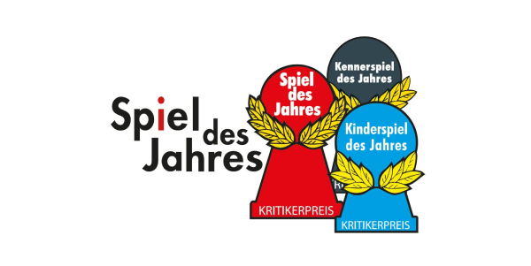

Avete mai notato un simbolo a forma di pedone, stampato sulle scatole dei nostri giochi? Quello con le scritte in Tedesco e le foglie di alloro dorate!
Se sì, probabilmente saprete anche a cosa si riferisce, altrimenti vi vogliamo dare un aiutino su cosa cercare nella prossima serata...

I tre loghi rappresentano ciascuno una delle principali onorificenze che un gioco da tavolo possa ricevere.
Ogni anno, una giuria composta da giornalisti del settore tavololudico stila una lista di candidati meritevoli, fra i quali decreterà poi il vincitore in ciascuna di tre categorie di miglior gioco: per famiglie, per esperti, per bambini.
Ciascuna di esse è rappresentata da un logo di colore differente che verrà stampato su tutte le nuove copie dei giochi vincitori e, con le dovute specifiche, anche su quelle dei finalisti. Vediamole nel dettaglio.
Dei tre titoli, quello più conosciuto e antico, è quello che dal 1979 premia il miglior gioco “per famiglie”. Non che sia un requisito avere figli e nonni al seguito per giocarlo: si tratta piuttosto di un gioco adatto a qualsiasi palato. Per questo, requisiti ricercati per lo Spiel des Jahres sono quelli della novità, della semplicità di regolamento e dell’appeal grafico. Fra i più celebri vincitori, “I coloni di Catan”, “Carcassone”, “Ticket to Ride” e fra quelli che trovate quasi sempre alle nostre serate, “Dixit”, “Hanabi”, “Nome in codice” e “Kingdomino”.
Più difficilmente troverete un bollino azzurro di questo tipo fra i giochi di Ludimus, ma qualche volta capita. Questa categoria, istituita nel 2001, è specifica per i giochi dedicati ai bambini.
Alcune menzioni fra i vincitori degli scorsi anni: “Ice Cool”, un gioco di schicchere con pinguini a tutto sprint, apprezzabile anche dai più grandi; “Stone Age Junior”, semplificazione del celebre gioco di piazzamento lavoratori; “Il labirinto magico”, che rivisita l’omonimo gioco che probabilmente avrete giocato almeno una volta da piccoli.
Di più recente ideazione (esiste dal 2011), questo premio viene assegnato a giochi di difficoltà un po’ più alta rispetto a quelli candidati allo “Spiel des Jahres”, ma che allo stesso tempo rispondano ai requisiti citati in precedenza. Insomma, non aspettatevi super cinghiali da tre ore esclusa spiegazione, ma titoli che vi daranno comunque delle grandi soddisfazioni. Fra i più conosciuti in questa categoria abbiamo “7 Wonders” e “Istanbul” fra i vincitori, e fra i nominati “Elysium”, di recente acquisizione per Ludimus, e il super “Concordia” che nell’ultimo periodo viene intavolato costantemente alle nostre serate... ci si chiede ancora come mai non abbia vinto il premio (n.d.a.). Che sia per via delle dimensioni della scatola (n.d.e.)?
Detto questo, dovete sapere che questo articolo non a caso è stato scritto proprio adesso. Proprio in questo periodo dell’anno vengono annunciati i giochi finalisti e fra giugno e luglio vengono scelti e premiati i vincitori di ciascuna categoria.
Ormai siete super esperti dello Spiel des Jahres e dei suoi fratellini e dunque siete pronti a conoscere i giochi nominati per l’edizione di quest'anno.
Fra questi, The Mind lo trovate già sui tavoli di Ludimus, così come “Santorini” e “Clank!”, i quali pur non rientrando fra i finalisti, si sono guadagnati un posto nella lista dei giochi raccomandati del 2018, rispettivamente nella categoria Spiel des Jahres e Kennerspiel des Jahres. Quest’anno è stato inoltre assegnato un premio speciale a “Pandemic Legacy - Season 2”